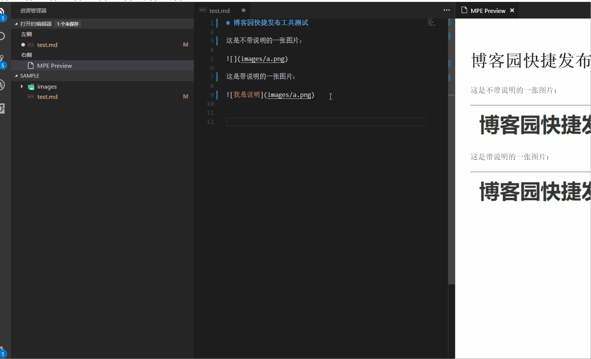
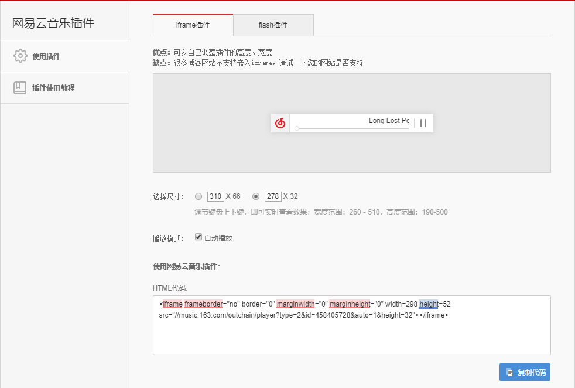

原文连接:https://www.cnblogs.com/vincent1997/p/10984357.html
一直想弄一个blog。
主流的有csdn、博客园，csdn上广告太多，有时候必须得登录才能看到一些内容，让我非常反感。相比之下，博客园则清爽很多，使用了一段时间，但还是觉得不便。主要是上传文章经常会有格式问题，其次就是博客园的界面太老旧了。
后来就尝试在github pages上搭建Jekyll、Hexo，很geek，玩法很多。但要我自己维护还是有点折腾，我只想要一个写东西的地方，看得顺眼就行。
之后，我无意发现博客园的主题也是支持定制的，让我眼前一亮。这里贴一个教程。【详细图解】一步一步教你自定义博客园（cnblog）界面
当然，我没有折腾，我在github上找到了下面这款主题。
Silence
简洁好看，部署简单，还去除了广告，我非常满意。

解决了看的问题，剩下的就是写了。
之前用Hexo发布文章我觉得体验是最好的，在本地写好后，命令行一条指令就提交了，基本不会有格式问题。这里推荐一款markdown编辑器：Typora，它没有对照功能，但上手之后我相信它能让你更专注书写。
在本地用Typora写好文章后，上传到博客园还是有些不便，尤其是本地图片是没办法直接用代码上传的，一般要借助图床。于是我就去寻找有没有相关的插件，我找到了下面这个。
博客园快捷发布工具
这个插件可以直接将本地内容转换成博客园可识别的格式，然后复制粘贴就可以发布了，简单好用。具体的可以去下面的博客和github上看。

- blog：https://www.cnblogs.com/stulzq/p/9043632.html
- github：https://github.com/stulzq/CnBlogPublishTool
看板娘
简洁的界面是不是感觉少了点什么，试着添加一个可爱的看板娘把。
具体操作也很简单，可以参考这篇blog。https://www.cnblogs.com/kousak/p/9726514.html
顺便科普一下什么是看板娘，本人不是二次元。
看板娘一词源自日语“看板娘(かんばんむすめ)”。其中的“看板”指的是店面招牌，或者是为了宣传、打广告而制作的宣传牌。“看板娘”也就是店面的招牌姑娘，亦即能够提升店面人气和顾客流量的女服务生、女店员等。也就是说，看板娘本身就是一块“活看板”，其本身的魅力就能够起到宣传、拉人气的作用。英语又称之为“Poster Girl”。
看板娘一词并不是正式的职业名称，而是一种习惯称呼，多用于饮食行业的餐馆、咖啡店等，有时也用于超市、小卖店等店面。该概念上的看板娘是狭义的看板娘，从职业上讲，属于女服务生、女店员等的范畴。[1]
另外，有时也把店面外树立的等身大的人型牌子的角色称作看板娘。网易云音乐插件
去网易云音乐网页上搜索喜欢的歌曲，然后点击生成外链。

复制上面的代码src="//music.163.com/outchain/player?type=2&id=458405728&auto=1&height=32"，替换下面代码中的src="//music.163.com/outchain/player?type=2&id=5047348&auto=1&height=32"，尺寸参数可以自己调，然后在博客园设置页面把代码贴到页首Html代码里面就可以了。
唯一的问题是很多我喜欢的歌都因为版权问题无法生成外链。= =难受
<script type="text/javascript">
var s = unescape("\u0069\u0066\u0072\u0061\u006d\u0065");
var f = '<'+s+' frameborder="no" border="0" marginwidth="0" marginheight="0" width="280" height="52" src="//music.163.com/outchain/player?type=2&id=5047348&auto=1&height=32" class="music" style="z-index: 0;right: 0PX;display: block;bottom: 60px;position: fixed;"></'+s+'>';
$("body").append(f); //网易云音乐
</script>坚持
有了这些支持，是不是感觉博客园也焕然一新了。接下来就是让自己保持源源不断的动力，不断地学习和写作，我会努力经营好这个小站，与大家共勉。